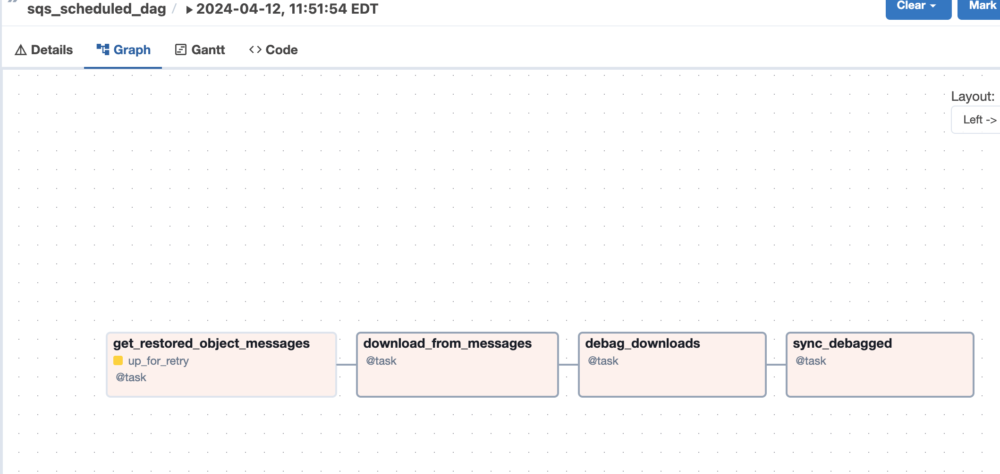

BDRC Airflow Development¶
This document contains details of the different elements of airflow-docker and how their elements relate.
Architecture of this module¶
the principal components of this module are:
the DAG code that runs the operations.
facilities for marshalling code blocks.
test utilities.
Building the image¶
Note
bdrc-compose-dockerfile.yml has a dual role in this process. It not only is a standard dockerfile for running the image, but it is also used to build it. Building inside the dockerfile frees you from having to worry about changing directories to access the material, and keeps the build process out of the development repo.
bdrc-docker.sh is the entry point to building the bdrc-airflow image, that docker compose runs later. It:
Sets up a
COMPOSE_BUILD_DIRif -rebuild, wipes out the
COMPOSE_BUILD_DIRotherwise adds to it.Adds these elements to
Copies in the archive-ops/scripts/syncAnywhere/deployment scripts (
syncOneWork.sh)Merges two sets of requirement files, and invokes
RUN pip install -r requirements.txton the image. This installs all the python libraries that both the DAG and the sync scripts requireBrings down the audit tool install image from github and installs it.
Adds the audit tool configuration to image.
Exports environment variables for the docker compose build step. These are referenced in the bdrc-docker-compose.yml file:
Tip
Really important to be careful about .config. We could possibly bind mount ~service/.config to the container (since the container runs under the host’s service uid: (see scheduler:....user: clause in bdrc-docker-compose.yml`) but that brings in the whole tree, and is fragile. So I decided that copying the material from .config should be a manual operation that is selective. As the range of operations in airflow-docker expands, images may need to be built that need more entries from .config e.g, Google books.
For now, just copy bdrc/auditTool into a config dir, and give that dir as the –config_dir argument. After the build is complete, it can be deleted, but should be preserved for next builds.
In bdrc-docker.sh
# in the bdrc-docker.sh:
export DAG_REQUIREMENTS_DEFAULT="./StagingGlacierProcess-requirements.txt"
export COMPOSE_AIRFLOW_IMAGE=bdrc-airflow
export COMPOSE_BDRC_DOCKER=bdrc-docker-compose.yml
export COMPOSE_BDRC_DOCKERFILE=Dockerfile-bdrc
export BIN=bin
export AUDIT_HOME=
export BUILD_CONFIG_ROOT=.config
These are read by bdrc-docker-compose.yml to build the image:
#--------------------------------------------
# Refereneced in the bdrc-docker-compose.yml, referenced:
any-name:
build:
context: ${COMPOSE_BUILD_DIR}
dockerfile: ${COMPOSE_BDRC_AIRFLOW_DOCKERFILE:-Dockerfile-bdrc}
args:
SYNC_SCRIPTS_HOME: ${BIN}
PY_REQS: ${COMPOSE_PY_REQS}
CONFIG_ROOT: ${BUILD_CONFIG_ROOT}
Note especially the args: clause above. these are exported into Dockerfile-bdrc to build the image. Here are some examples of how Dockerfile-bdrc uses these:
ARG SYNC_SCRIPTS_HOME
ARG PY_REQS
ARG CONFIG_ROOT- ``bdrc-docker-compose.yml``
.....
ADD $SYNC_SCRIPTS_HOME bin
ADD $PY_REQS .
Building the container¶
The other purpose of bdrc-docker-compose.yml is to guide the run-time execution of the bdrc-airflow image. The script deploy sets this up. It:
Creates a compose build directory (the
--destargument)Copies the
bdrc-docker-compose.ymlfile to the compose build directory/docker-compose.yaml(for normalization).Creates useful folders in the
--destdirectory:
logsfor the logsdagsfor the DAGspluginsfor the plugins (none used)processingfor the logsdatafor working data (most usually, downloaded archives)
Populates
secrets- See Docker conceptsPopulates the
.envfile, the default, ** and only ** external source for the environment available to thedocker composecommand..envis the source for resolving variables in the docker-compose.yaml file.
.env fragment:
COMPOSE_PY_REQS=
BIN=
ARCH_ROOT=/mnt
... # other variables
SYNC_ACCESS_UID=1001
references in bdrc-docker-compose.yml:
scheduler:
...
user: ${SYNC_ACCESS_UID}
...
- ${ARCH_ROOT:-.}/AO-staging-Incoming/bag-download:/home/airflow/bdrc/data
Note
The - ${ARCH_ROOT:-.}/AO-staging-Incoming uses standard bash variable resolution. If ARCH_ROOT is not set, it uses .. This is a common pattern in the .env file.
From the --dest dir, you can then control the docker compose with docker compose commands.
What is actually happening¶
All this work supports essentially four functions, which comprise the process. The process container is an airflow DAG named sqs_scheduled_dag It appears in the docker UI (https://sattva:8089) as sqs_scheduled_dag.

The DAG contains four tasks, which operate sequentially: their relationship is defined in the code quite directly, using an advanced airflow concept known as the Taskflow API.
msgs = get_restored_object_messages()
downloads = download_from_messages(msgs)
to_sync = debag_downloads(downloads)
sync_debagged(to_sync)
In the Airflow UI, their relationship is shown in the UI:
{kind=link}
The actions of the scripts are mostly straightforward Python, but there are two airflow specific elements worth noting:
Retrying when there is no data¶
The get_restored_object_messages` task will retry if there are no messages. This is shown in the task graph above: the task is labeled as ‘up-for-retry’ This is given as a parameter to the task’s decorator. This is the only task to retry on failure, as it is the only one expected to fail, when there are no object messages to retrieve.
Using a bash shell¶
The task sync debagged uses a bash shell to run the syncOneWork.sh script. The environment to run that script is configured in the task itself. It is a separate environment from the docker image and the airflow container itself.